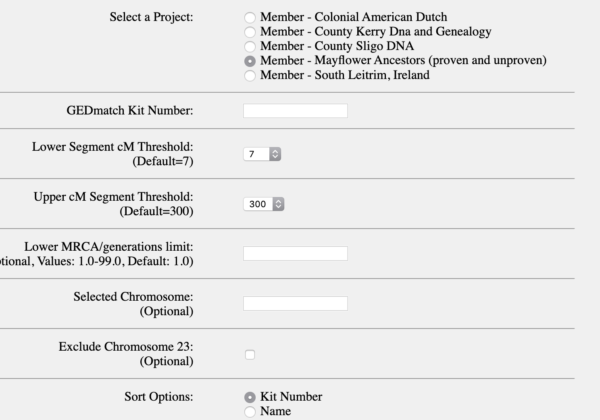
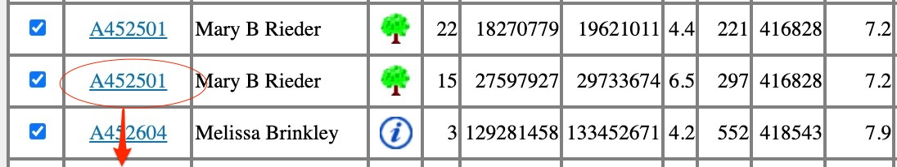

Ancestors Project on Gedmatch
An Introduction
Welcome to the Mayflower Ancestors (Proven and Unproven) project on Gedmatch, a resource to assist research into the genetic relationships between descendants of the 1620 voyage.
How this project can help you:
The most reliable way to use this project to find or confirm Mayflower ancestors is as a means to find others who have researched a document trail, and compare their trees with yours for commonalities, OR to find people through DNA matching with whom you share a recent common ancestor who is known to descend from a passenger. This project cannot help you find a direct DNA link to someone from the 1600s. As much as I love the science of DNA tracing, the state of current tools and techniques means that your most reliable bet for proof is still going to be old fashioned birth, census, death, property, and church records.Getting Started
Go to the Ancestors Project Page. You'll see a list of the projects you are signed up to. Tick the radio button for Mayflower Ancestors (Proven and Unproven) if you're a member of more than one project.
Put your kit number into the box marked "GEDmatch Kit Number."
Leave the Lower segment cM threshold at 7 and generate your matches. Some genealogists would recommend using 10 as your lower threshold to avoid false positive matches.
You can leave all the other settings as they are, and press submit. You'll see a screen like this:

You can click on any of those little green tree icons to see a Gedcom (Family tree) file and examine the Pedigree report or Decendants list to find Mayflower ancestors. When you click the tree you'll see this menu:
 By clicking pedigree, you'll see the ancestors of the individual or kit associated with that gedcom laid out in a truly ugly text-based tree:
By clicking pedigree, you'll see the ancestors of the individual or kit associated with that gedcom laid out in a truly ugly text-based tree:
A shortcut is to use your browser's text search [usually ^F (Windows) or Cmd-F (Mac)] to search on a Mayflower passenger name and track back from there.
You can also compare kit numbers to those associated with specific passengers by using the spreadsheet that I developed for the Facebook Mayflower Ancestors (proven and unproven) group. Along the bottom of the spreadsheet you'll find several tabs. If you have a theory about which passenger you're related to, you can look at their matching kits in the "Kits by Passenger" tab, and compare the kit numbers in your Gedmatch table of genetic matches to see if those kits are represented.
Eyeballing the spreadsheet and your match list is pretty imperfect and tiring though.
UPDATE:I've created and automated way to interrogate the spreadsheet to see which of your matched kits are associated with which passengers. Give it a try: The Mayflower Ancestors Gedmatch Kit Interrogator.
You can also interrogate the passenger associations with kits in your match list directly in the spreadsheet. Copy and paste the kit numbers from the Gedmatch table of your genetic matches and enter them into a different tab on the spreadsheet, the one marked "Which Passenger Kit search" to get the kit info and the passengers that kit is related to.
So if for example my search of the Ancestors project said I match kit A452501, and I want to know whether that's also a Howland descendant or what other passenger ancestors we might have in common, I can plug that kit number into the spreadsheet and it will spit out the passenger names the kit is associated with.


Bear in mind that there are proven and unproven matches in the database though, and a single match is not proof of anything. What you really want to look for are MULTIPLE kit matches that match the same ancestor. So if you do see a half dozen other kits that claim, for example, a Howland Tilley ancestry that match with yours, then it's likely you're on the right track. But nothing about this science is certain - it's all probabilities, and you'll want to corroborate with multiple matches, chromosome mapping, documentation, and all that elbow grease that goes into working out these puzzles.
Now, if you have Tier 1, the premium subscription to Gedmatch which costs 10 US dollars a month, you have some further options.
After you run your project report, you'll have the option to hit the "MKA Submit" button to analyze a bunch of kits. Tick the boxes to the left of the kits you want to compare.
You'll see a screen like this:
After you press "Visualization Options" you'll see tabs for "Gedcoms" which will list all the kits that have gedcoms and one on the far right called "Clusters." You can learn more about clusters here, but in short they are a way to visualize common ancestor groupings. In my case, I have a cluster map that looks like this: and by interrogating the trees of the kits each color box matches, or common matches to those individuals on other ancestry sites, I'm able to identify the most likely common ancestor. Each colored box can in fact have *multiple* common ancestors, but in our case what you're looking for is one who descended from your Mayflower ancestors.
If you identify a common ancestor that other descendants share, your next step in confirmation is to see if one of the kits you're matching to has a certificate from the General Society of Mayflower Descendants. You can see a list of those kits in the spreadsheet here. You can also compare the list of certified descendants at this Rootsweb page listing descendant surnames. (There's a very high barrier of proof applied to these names, and there are a number of lines that the GSMD doesn't recognize that are the source of some controversy.)
I hope this introduction has been useful. Good luck in your research!!!
A Word about Small Segment Matching
Since beginning this project, I've learned a lot about the deficiencies of DNA comparison when it comes to tracing ancestors back to the 1600s. The only methods that professional genealogists currently accept are Y-Dna tracing down a continuous male line and mitochondrial tracing down a continuous female line. Those methods are going to help evidence (not prove) ancestry for only a very small percentage of descendants with an unbroken male or female biological line. There is an ongoing Mayflower Ancestry Project here with Y-DNA and MtDNA information on most passengers. And there's a project on FamilyTree DNA which is open to you if you are a member of the General Society of Mayflower Descendants.
When I started this project, I was trying to make it easier to map small segments of autosomal DNA, a method I thought I had had great success with. But in the words of one expert, I was only illustrating the power of confirmation bias. I was finding what I wanted. Picking a needle out of a haystack that was actually made up of thousands of needles, and declaring I'd found the one I was looking for. This article has a full analysis of the problem with short segments.
So while I've come to accept that the method of comparing small matches may be unlikely to have merit, and I'm cautioning against using it, I'll leave my instructions on an archived page for anyone who wants to explore for themselves. Like all things relating to DNA, we're dealing with likelihood. And while it may be unlikely you've found a small match to a Mayflower passenger, it's not impossible. I'm currently in touch with one project member who appears to have found a "Hopkins Segment" that he has verified across multiple siblings and ancestors as being inherited rather than random, with a strong correlation to multiple other Hopkins descendants. Watch this space!
I'm a volunteer administrator and have no affiliation with Gedmatch or the Mayflower Ancestors (Proven and Unproven) Facebook group this project sprang from. I'm just very keen on genealogy and like making tools to make it easier for all of us to look back through our genetic history. If this tutorial and these tools were helpful to you, you are welcome to say thanks by clicking this link to buy me a virtual coffee. Coffee helps me keep this server running and ad-free (Grumpy opinion: ads have ruined the internet). It fuels my efforts to keep the data in the spreadsheet accurate and tidy, and to answer your support questions whenever I can.
Resources
- Join the Gedmatch Project
- The General Society of Mayflower Descendants
- Mayflower Passengers List
- Relative Finder
- Spreadsheet of Gedmatch kits indexed by passenger
- Facebook Group: Mayflower Gedmatch (Proven and Unproven)
- Mayflower Ancestry Project Wikipedia
- Y-DNA Haplogroups of Male Passengers
- MtDNA Haplogroups of Female Passengers
- Mayflower Project on FamilyTree DNA
- Rootsweb database of Mayflower Descendant surnames